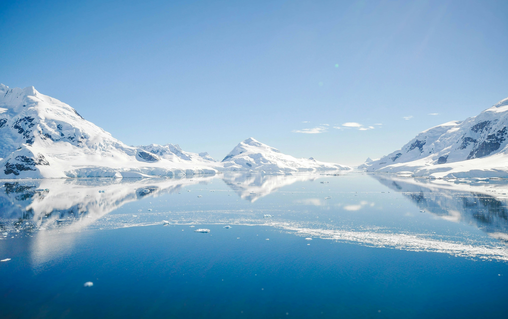
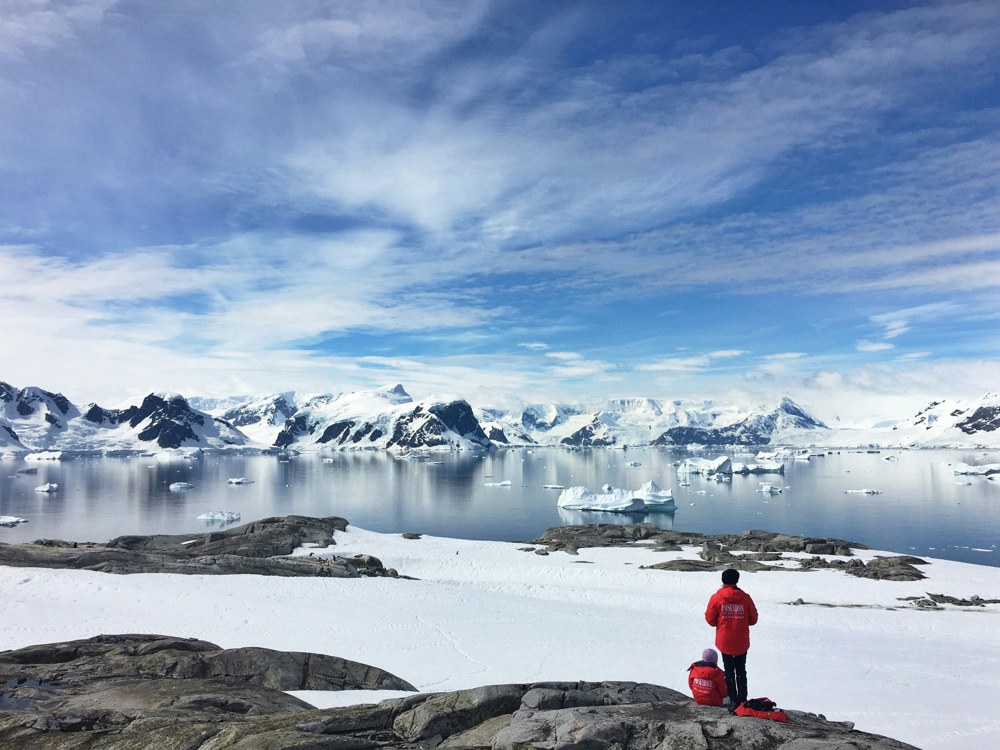

"Antarctica is a vast and remote continent defined by its extreme climate and dramatic icy landscapes. Nearly the entire landmass is covered by thick ice sheets that have formed over millions of years, creating towering glaciers and frozen plains unlike anywhere else on Earth. Temperatures can drop below −80°C in winter, and strong winds make the environment even harsher. Despite these conditions, Antarctica remains one of the most important natural regions for understanding the planet’s past and future climate."
"Although Antarctica has no permanent residents, it plays a vital role in global scientific research. Scientists from many countries live in research stations throughout the year to study climate change, ocean currents, and unique ecosystems. The surrounding seas support rich wildlife, including penguins, seals, and whales that have adapted to the cold environment. Through international cooperation, Antarctica is protected as a peaceful continent dedicated to science and environmental preservation."